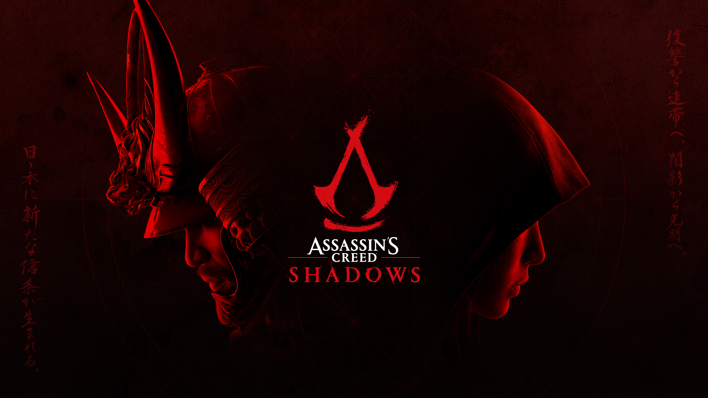
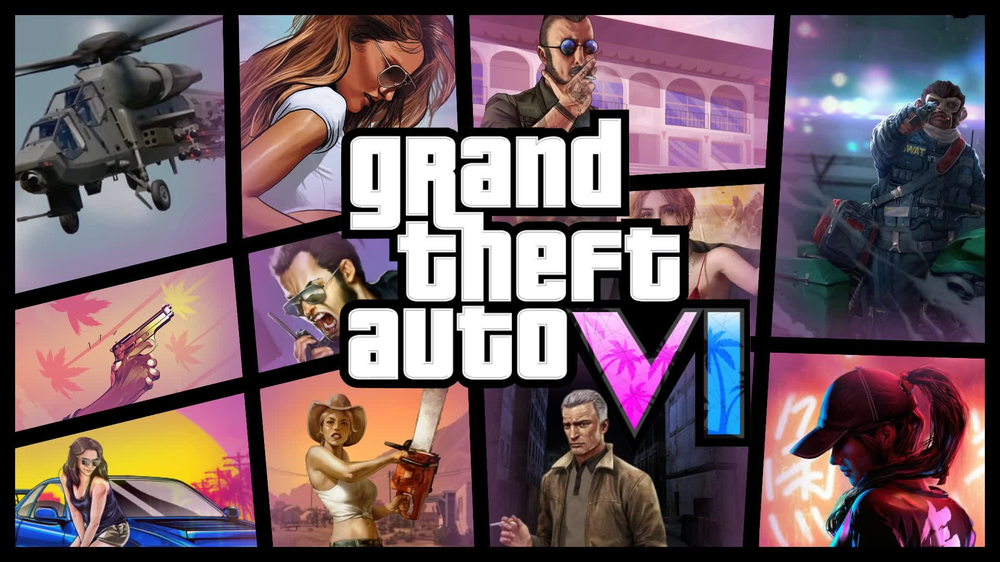

At Gaming World, we’re committed to keeping up with the ever-evolving world of gaming by bringing you the latest and greatest titles. Whether it’s highly anticipated blockbusters or under-the-radar indie gems, our store stays ahead of the curve to ensure you never miss a beat. We regularly update our collection to feature fresh releases across all platforms, catering to every type of gamer. Stay connected for updates and previews as we gear up for the most exciting new arrivals!
Assassin’s Creed Shadows
Release date: Feb. 14
Where to play: Mac, PlayStation 5, Windows PC, Xbox Series X
much for the entire run of the series, Assassin’s Creed fans
have had one request: a game set in feudal Japan. That game, Assassin’s Creed Shadows,
is finally out in 2025, bringing literal years of clamoring to a close. All told, Shadows
could be the biggest Assassin’s Creed in years or the biggest flop. Either way, one to watch!
-Ari Notis-
FragPun

Release date: March 6
Where to play: PlayStation 5, Windows PC, Xbox Series
This fast-paced, colorful shooter is set for release in March.
Traditional hero shooter mechanics are bolstered by power-up cards,
which grant wild bonuses like a teeny-tiny noggin that’s tough to headshot,
or an upside-down world. This free-to-play game has super short rounds and rewards
aggressive play, quick reflexes, and clever use of hero powers and shard cards.
-Cass Marshall-
Grand Theft Auto 6
Release date: 2025
Where to play: PlayStation 5, Xbox Series
Do we even have to remind you that Grand Theft Auto 6 is currently slated for 2025?
Though there’s no announced release date, publisher Take-Two Interactive has the game set for fall 2025.
GTA 6 is easily the most anticipated game expected out in the next year. While those games were set in the 1980s, GTA 6 brings
Vice City to the present, following a Bonnie and Clyde-esque duo.
-Nicole Carpenter-